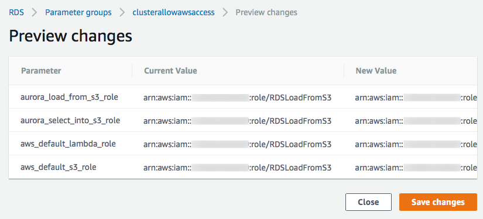
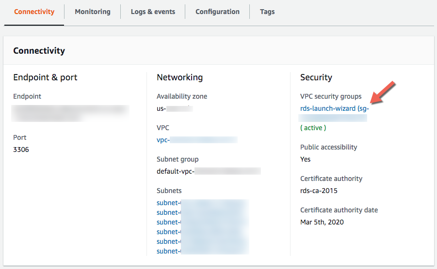
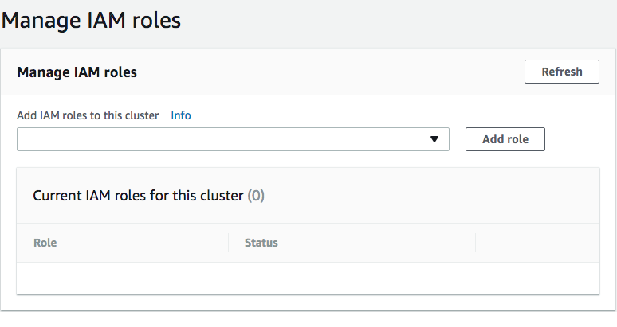

Link your AWS Account¶
These instructions are for experienced AWS administrators only.
Follow these instructions only if you want to manually link your AWS Account to Bipost API. Strong knowledge of AWS is required. We strongly recommend to use instead the automated CloudFormation template.
IMPORTANT NOTICE: If you are planning to use the following AWS resources for production you may want to follow your company policies and understand how to use AWS security according to your needs.
Canonical User ID¶
Sign in with the root AWS account.
- Upper right corner of your AWS console, click your account name (or follow next link).
- My Security Credentials.
- Click Continue to Security Credentials if dialog appears.
- Expand Account Identifiers.
-
Copy AWS Account ID (12-digit) and Canonical User ID (64-digit).
-
Email these numbers to info@factorbi.com so we can setup your dedicated Bucket.
Stop here until you get a reply email from Factor BI. We will provide your bucket name which will be used on further steps.
IAM Policy to Grant Access to S3¶
From this point on you need the Bucket name that we provided over email on the previous step.
- Open IAM Console.
- In the left navigation pane choose Policies.
- Create policy blue button.
-
Click JSON tab.
-
Copy and paste the following.
{ "Version": "2012-10-17", "Statement": [ { "Effect": "Allow", "Action": "s3:*", "Resource": [ "arn:aws:s3:::bipostdata-abc123456789012", "arn:aws:s3:::bipostdata-abc123456789012/*" ] }, { "Effect": "Allow", "Action": "lambda:InvokeFunction", "Resource": "arn:aws:lambda:us-east-1:951464950892:function:bipost-getOutData" } ] } -
Replace the text
bipostdata-abc123456789012with the Bucket Name you received from us over email. -
Click Review policy blue button on the lower right.
-
Enter the following on the Review policy screen.
Name:
auroraToS3PolicyName:
Connection to Factor BI bucket -
Click Create policy blue button.
Further information from AWS go to: Allowing Amazon Aurora to Access Amazon S3 Resources
IAM Role to Load Data From S3¶
- Open IAM Console.
- In the left navigation pane choose Roles.
- Create role blue button.
-
Choose AWS service, then RDS

-
Under Select your use case click RDS - CloudHSM and Directory Service, click Next: Permissions blue button.
- Click Next: Tags and then Next: Review.
- Set Role name:
RDSLoadFromS3and click Create role. -
Now from the navigation details, click the role you just created.
-
Under permissions tab, detach by clicking X the following:
AmazonRDSDirectoryServiceAccess
RDSCloudHsmAuthorizationRole
-
Now click Attach policies blue button.

-
Filter policies by Customer managed.
-
Select
auroraToS3Policyand click Attach policy blue button. -
Copy Role ARN string and save it for further use. It may look like this:
arn:aws:iam::123456789012:role/RDSLoadFromS3
Further information from AWS go to: Creating an IAM Role to Allow Amazon Aurora to Access AWS Services
IAM User to Save Data to S3¶
This step will provide access to files created by the SELECT INTO OUTFILE S3 command.
- Open IAM console.
- In the left navigation pane choose Users.
- Click Add user blue button, upper left corner.
- User name:
auroraToS3 - Access type: Programmatic access
- Click Next: Permissions blue button lower right corner.
- Select Attach existing policies directly
-
Filter policies by Customer managed.
-
Select auroraToS3Policy

-
Click Next: Tags and then Next: Review.
-
Click Create user blue button lower right corner.
- Click Download .csv.
-
Email the CSV to info@factorbi.com so we can setup the Access key.

Closest AWS Region¶
-
Click the following image and hit HTTP Ping and look for the lowest latency.

-
Try several times and at different times of the day.
-
Login to your AWS Account Console Home and select the closest region to your location.
Cluster Parameter Group¶
- Open RDS console.
- On left pane go to Parameter groups.
-
Click Create parameter group orange button on top.
Parameter group family:
aurora-mysql5.7Type:
DB Cluster Parameter GroupGroup name:
ClusterAllowAWSAccessDescription:
Bipost Aurora Database Cluster Parameter Group -
Click Create orange button and refresh browser.
- Click check box on your new
clusterallowawsaccessparameter group and click Parameter group actions and then Edit. - Make sure you have your ARN role string (not sure? click here) and replace it below.
-
Set the following:
Name Values Example aurora_load_from_s3_role paste Role ARN string arn:aws:iam::123456789012:role/RDSLoadFromS3aurora_select_into_s3_role paste Role ARN string arn:aws:iam::123456789012:role/RDSLoadFromS3aws_default_lambda_role paste Role ARN string arn:aws:iam::123456789012:role/RDSLoadFromS3aws_default_s3_role paste Role ARN string arn:aws:iam::123456789012:role/RDSLoadFromS3 -
Click Save changes orange button.
-
Click Preview changes and it should look like this:

Further information from AWS go to: Associating an IAM Role with a DB Cluster
DB Parameter Group¶
- Go to RDS console.
- On left pane go to Parameter groups.
-
Click Create parameter group orange button on top.
Parameter group family:
aurora-mysql5.7Type:
DB Parameter GroupGroup name:
InstanceAllowAWSAccessDescription:
Bipost Aurora Parameter Group -
Click Create orange button and refresh browser.
- Click check box on your new
instanceallowawsaccessparameter group and click Parameter group actions and then Edit. -
Set the following:
Name Values log_bin_trust_function_creators 1 max_allowed_packet 1073741824 max_connections 16000 max_user_connections 4294967295 event_scheduler ON -
Click Save changes orange button.
-
Click Preview changes and it should look like this:
Aurora Instance¶
Create Instance¶
- Go to RDS Console and click Databases.
- Click Create database, orange button.
-
Select Engine: Amazon Aurora, scroll down, Edition: MySQL 5.7-compatible click Next orange button.
-
Specify DB details
Parameter Set to: Capacity type Provisioned DB engine version Aurora (MySQL)-5.7.12 DB instance class db.t2.small Multi-AZ deployment No DB instance identifier Set a lower-case name with no special characters Master username root Master password Combine upper and lower case, numbers and special characters. -
Click Next orange button.
-
Configure advanced settings
Parameter Set to: Virtual Private Cloud (VPC) Create new VPC Subnet group Create new DB Subnet Group Public accessibility Yes Availability zone No preference VPC security groups Create new VPC security group DB cluster identifier leave blank Database name leave blank Port 3306 DB parameter group instanceallowawsaccess DB cluster parameter group clusterallowawsaccess Option group leave default Encryption Disable encryption Failover Priority tier-0 Backup retention period 1 day Monitoring Disable enhanced monitoring Log exports All unchecked Auto minor version upgrade Enable auto minor version upgrade Maintenance windows leave defaults Enable deletion protection Clear check box -
Click Create database orange button. This process may take a few minutes.
RDS Instance Security Group¶
- Go to RDS Console and click Databases.
- Once the new instance (Writer Role) has Status:
Availableproceed: - Click your new instance (Writer Role).
- Connectivity tab.
-
Under Security click the blue string that looks like this
rds-launch-wizard (sg-XXXXXXXX)
-
You are now on EC2 Management Console and Security Group ID is already selected.
- Click Actions \ Edit inbound rules
- Remove the default Custom TCP rule created.
- Click Add Rule, under Type select
MYSQL/Aurora -
Source Custom and enter this value:
0.0.0.0/0 -
Repeat steps 9 & 10 and enter this value
::/0
-
Click Save blue button.
- Click Actions \ Edit outbound rules
- Verify if Type:
All traffic, Destination:Customand value:0.0.0.0/0is already set, if not, add the rule. - Go back to RDS console, select your instance (Writer Role), click Actions \ Reboot, confirm with orange button on the right.
-
Wait until Status is
Available -
Click your DB Instance (Writer Role), Connectivity, Security, and check if VPS security groups are
( active )
Add IAM Role to Aurora Cluster¶
- Go to RDS Console and click Databases.
-
Click your new DB identifier Role Regional, then scroll down to Manage IAM roles.
-
Under Add IAM roles to this cluster select the role you created:
RDSLoadFromS3and click Add role button.
-
Wait until you see Status ACTIVE.
Verify Instance Configuration¶
- Go to RDS console and click Databases.
- Verify instance (Writer Role) Status is Available
- Click your instance (Writer Role).
-
Connectivity tab, verify the following:
VPC security groups: rds-launch-wizard (sg-XXXXXXXX) ( active )
Public accessibility: Yes
-
Configuration tab, verify the following:
Parameter group: instanceallowawsaccess (in-sync)
-
Go back to Databases and click your cluster (Regional Role), verify the following:
DB cluster parameter group: clusterallowawsaccess (in-sync)
Test MySQL Connection¶
-
Download and install any MySQL client of your preference:
For Mac you may use "Sequel Pro" or "MySQL Workbench" For Windows you may use "MySQL Workbench" or "HeidiSQL" -
Go to RDS console, then Databases, click your new cluster (Regional Role).
-
Under Connectivity tab copy the Writer endpoint name string.
-
Launch your MySQL client and configure a new connection:
Host: Paste the Writer endpoint string.
Username: root
Password: type the Master Password
Port: 3306
Database: Leave blank
Connect using SSL: No
-
Click Connect and verify that you can successfully connect to your RDS instance.
Setup Factor BI Console¶
Click and follow steps to create your account with Factor BI.
Using other MySQL Users¶
If you don't want to use root account for the synchronization API, then you may create a new user and password on MySQL and:
- Give the new user:
GRANT LOAD FROM S3 ON *.* TO 'mynewuser'; -
Set the following Global Privileges:

Console Access to Bucket¶
Bipost synchronization uses S3 to upload the data that is extracted from the on-prem database. The bucket is located within Factor BI AWS account so we can efficiently handle API calls, patches and new releases.
We create a unique S3 bucket for each customer so nothing gets mixed up.
Sometimes you may want to access this bucket and review files and folders.
Write us to provide this access: info@factorbi.com